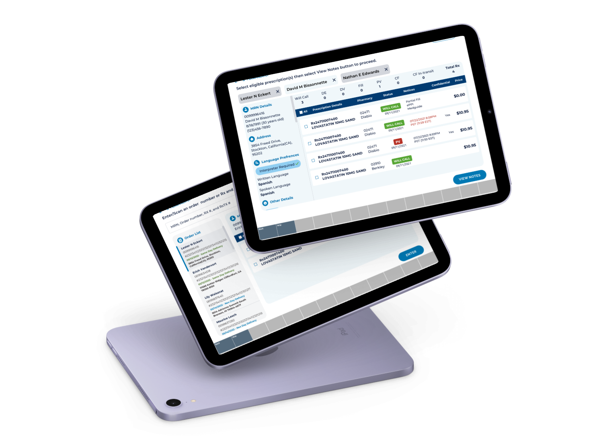
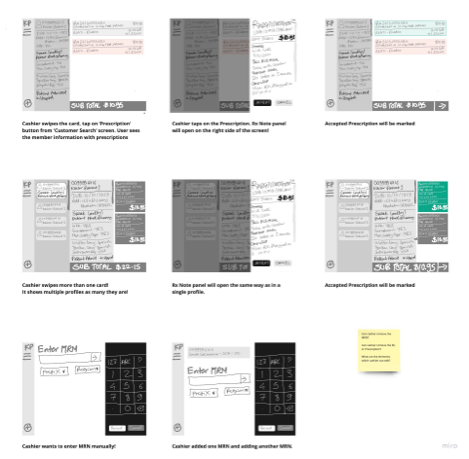
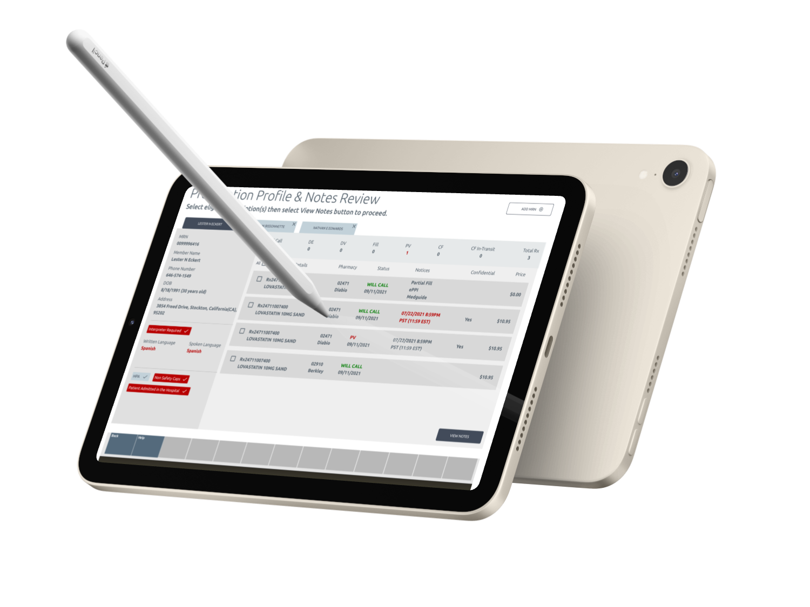
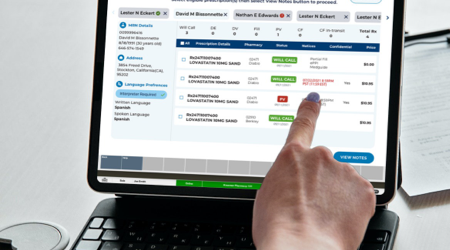
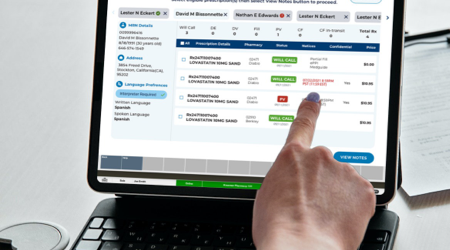

Seamless Payment Evolution with Customer-Centric Approach
Partnered with a leading American integrated managed care consortium, to seamlessly integrate the web CIM app into their point-of-sale system.
Problem statement
The Pharmacy POS system was unsupported and carries a notable risk of potential failure. There's an urgent requirement for a payment solution that caters to KP members across different lines of business. The absence of security and efficiency is impacting both risk levels and costs.
The Challenge
Revolutionize the payment journey with a consumer-centric approach that offers simplicity and seamless integration. This transformation empowers consumers to make payments for medical, premium, pharmacy services, and more, effortlessly and conveniently, aligning with affordability and exceeding consumer expectations.
Research
1. Engaging in stakeholder interviews unveiled the essential business objectives for the payment solution.
2. Through user interviews, the pain points linked to employing the POS system were disclosed.
3. Prioritized several challenges through a team voting system and subsequently chose to concentrate on implementing feasible solutions for them.
Ideate
Initiated the process with digital whiteboarding, sketching out concepts, gathering feedback, and swiftly iterating on ideas.
Whiteboarding
Wireframing
Generated low-fidelity wireframes, developed prototypes from them, and subjected them to testing with users.
Prototype and Test
Conducted iterative testing at the conclusion of each sprint, leading to a highly favorable outcome in terms of solution design.
Visuals
 

Results and Feedback
Consequently, the enhancement of frictionless payments contributes to customer happiness and a delightful user experience. Furthermore, this achievement positions us well to secure additional projects.